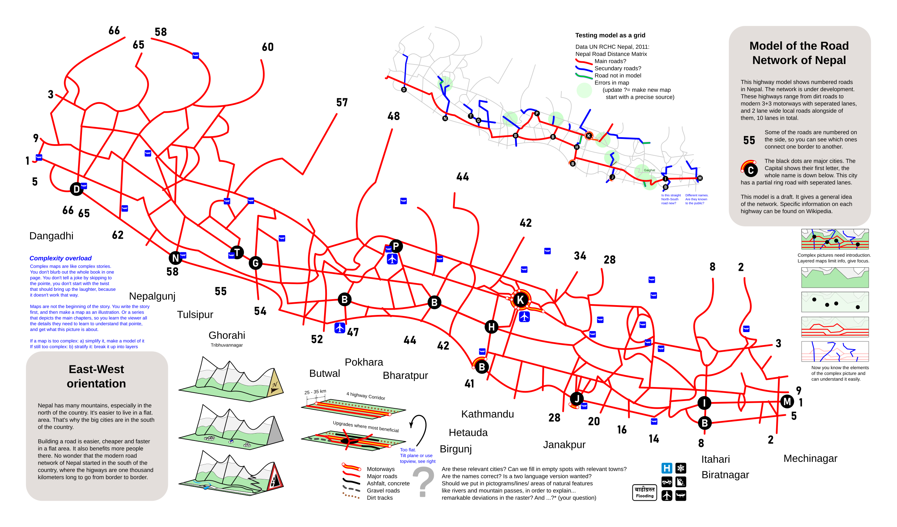
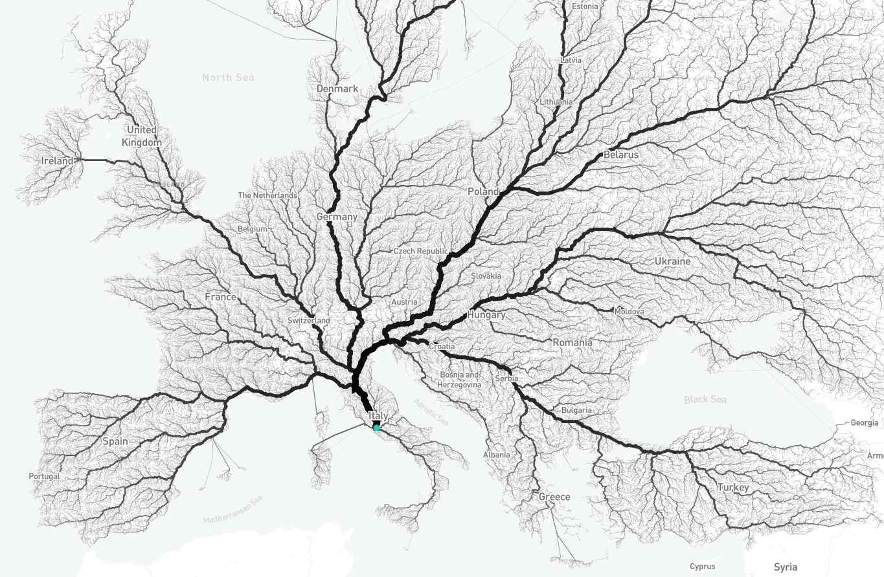
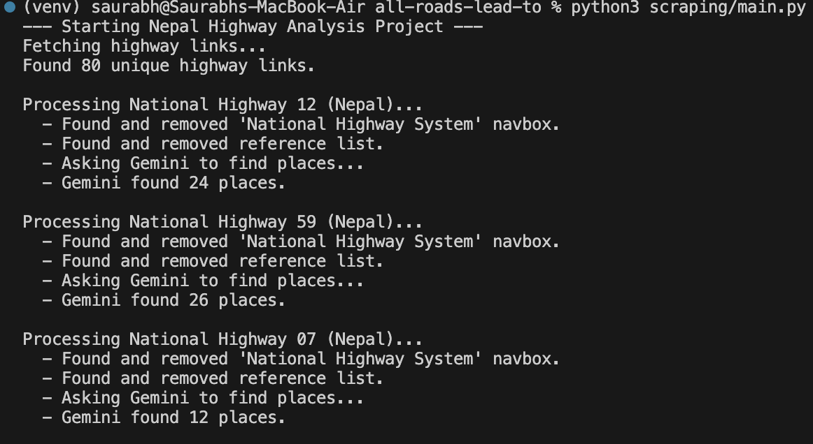
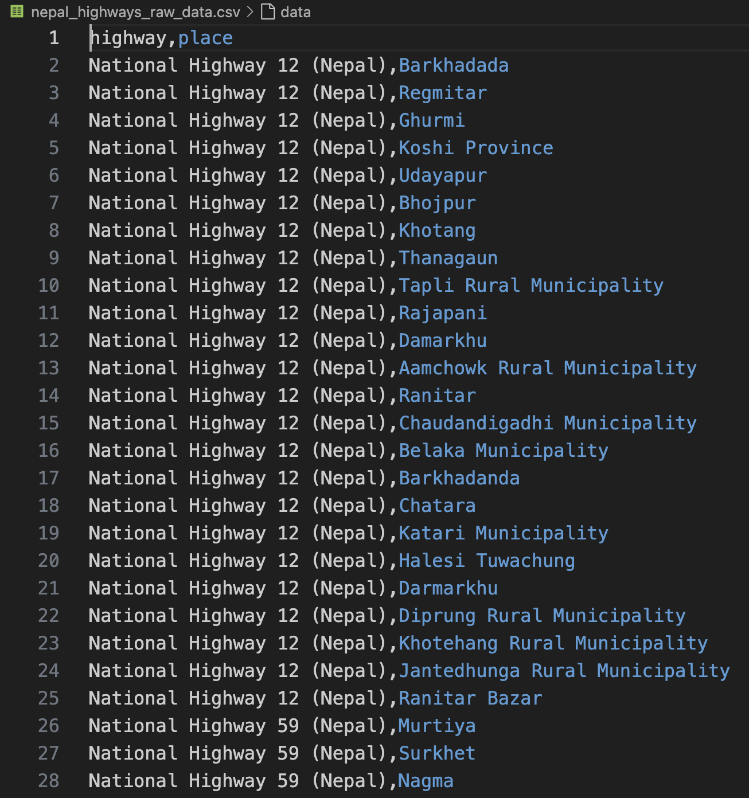

Github Repo: bvrvl/all-roads-lead-to
Nepal's National Highway System has 80 Highways. They are named serially from NH01(Mahendra Highway) to NH80(Bastipur–Belsot Road Planned ).
But most of them seem to 'point' to one place.
By Groetjes, Peter, Wikimedia Commons.
A closer look at the map reveals an imbalance: highways are concentrated in the Terai and the lower Hills, while the rest of the country is mostly disconnected.
For instance, Jhapa alone is the start/termination for 3 East-West highways while the 21 high Himalayan districts barely have one single horizontal highway of any length.

Asian Highway 02 right before it connects to NH01 in Kakarbhitta, Jhapa as seen from Panitanki, India (Google Street View)
Two thousand years after the glory of Rome, the road network in Europe still radiates from what once was the center of the world.
Moovel Lab. (2015). Roads to Rome.
Could a similar statement be made about Nepal?
My initial assumption was that if there were such a city, it would be Kathmandu or Hetauda and if it were a district, it would be Chitwan.
It turns out that the heart of Nepal’s highway network isn’t a city.
All roads apparently lead to the Koshi Province.

By Gaurav Bhandari, Wikimedia Commons.
Koshi Barrage, Saptakoshi River
Methodology
The full code is on my GitHub if you want to observe or replicate the analysis.
Wikipedia seemed to have a rough overview of the junctions and major places that each of the 80 highways touched. While not perfect, this was enough data to mine for an interesting answer.
I wrote a python script to scrape the main Wikipedia page on the National Highways of Nepal and get the URL for each highway (NH01-NH80).
Then I used another script to scrape individual highway pages and clean out redundant data like recurring tables, references, and other noise.
I used Gemini 2.5 Flash via the API to identify the names of the places along each highway.
The findings were then complied in a .csv file.
I used another script to analyze the frequency and identify the busiest hubs.

I remember returning from Kathmandu and seeing the Koshi River. It was that moment when everything felt like home. My friends felt the same. Even though home was far away, just glimpsing Koshi made the journey feel complete. It feels fitting that all roads lead here. After all, rome is where the heart is.
Github Repo for All Roads Lead to Koshi.